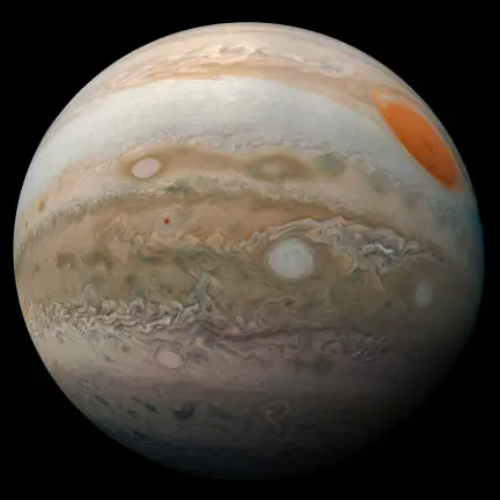
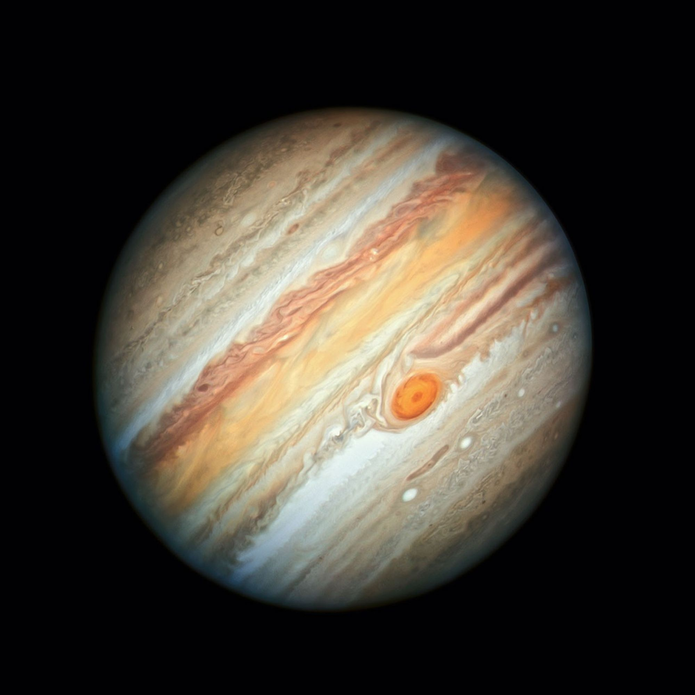
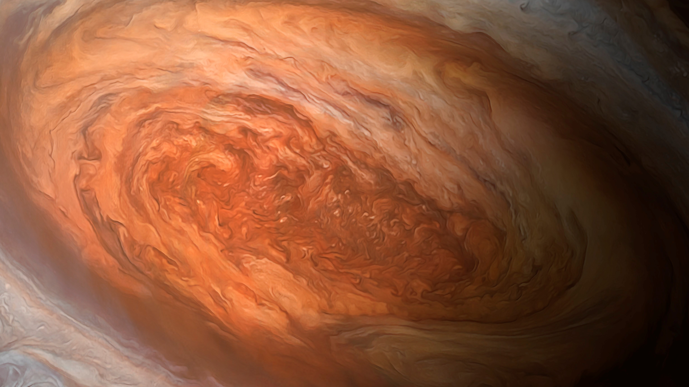
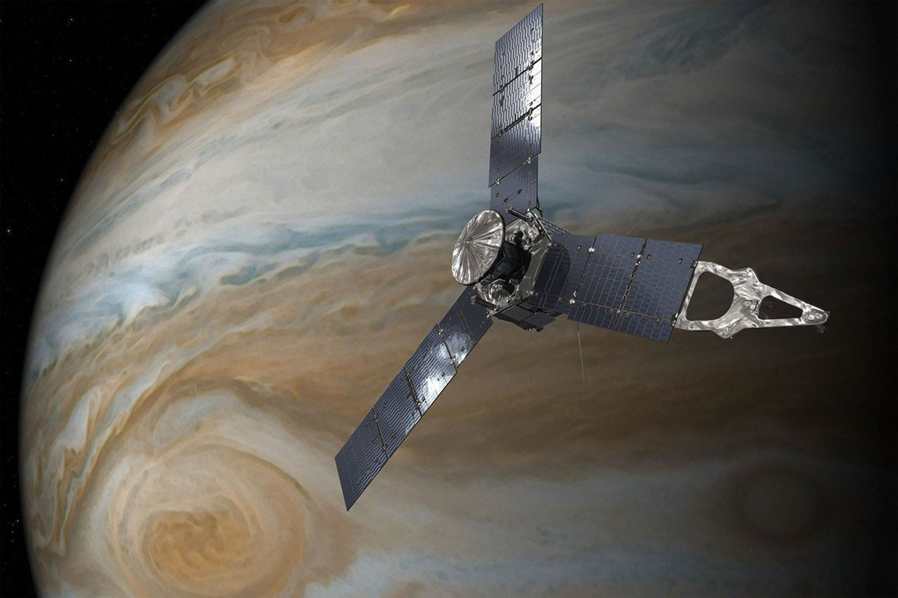

Jupiter is the largest planet in the Solar System and the most massive world orbiting the Sun. This enormous gas giant contains more than twice the mass of all the other planets combined. Its colorful cloud bands, powerful magnetic field, giant storm systems, faint rings, and diverse family of moons make Jupiter one of the most extraordinary planets known to science.

The largest planet in the Solar System with a diameter over eleven times that of Earth.
Jupiter's strong gravity dominates much of the Solar System beyond the asteroid belt.
Jupiter takes nearly twelve Earth years to complete one orbit around the Sun.
Jupiter possesses the largest known family of natural satellites in the Solar System.
Jupiter is the fifth planet from the Sun and the largest planet in the Solar System. It is classified as a gas giant, although much of its interior is believed to consist of compressed hydrogen existing in a metallic state. Jupiter formed approximately 4.57 billion years ago alongside the rest of the Solar System and has played a major role in shaping the architecture of planetary orbits through its immense gravitational influence.
The Great Red Spot is Jupiter's most famous atmospheric feature. It is an enormous high-pressure storm that has been continuously observed for more than 350 years. Large enough to contain Earth, this gigantic vortex rotates counterclockwise with wind speeds exceeding 430 km/h.
Currently wide enough to fit Earth inside with room to spare.
Powerful atmospheric winds circulate continuously around the storm.
One of the longest-lived storms ever observed in the Solar System.
A massive rotating high-pressure weather system.
Jupiter's colorful appearance comes from alternating bright zones and darker belts created by fast-moving jet streams. Clouds are composed primarily of ammonia crystals, ammonium hydrosulfide, and water vapor located at different atmospheric depths.
Regions where gas rises upward, forming high-altitude clouds.
Areas where gas sinks downward, revealing deeper atmospheric layers.
Powerful winds separate the belts and zones while shaping Jupiter's atmosphere.
Jupiter possesses the strongest magnetic field of any planet in the Solar System. Generated by rapidly rotating metallic hydrogen deep inside the planet, its magnetosphere extends millions of kilometers into space and traps enormous amounts of energetic charged particles.
The largest planetary magnetic environment in the Solar System.
Intense radiation poses serious challenges for visiting spacecraft.
Powerful auroras shine continuously near Jupiter's poles.
Rapid rotation of metallic hydrogen generates Jupiter's magnetic field.
Although Saturn is famous for its spectacular rings, Jupiter also possesses a faint ring system discovered in 1979 by Voyager 1. These rings consist mainly of microscopic dust particles produced by impacts on Jupiter's small inner moons.
A thin ring composed primarily of fine dust particles.
A diffuse inner ring surrounding Jupiter close to the cloud tops.
Very faint outer rings supplied by dust from small moons.
Jupiter has no solid surface like Earth. Its atmosphere gradually transitions into deeper layers of compressed gas before becoming liquid hydrogen and eventually metallic hydrogen under enormous pressure. Scientists believe a dense rocky or icy core may exist at its center.
Approximately 90% hydrogen and 10% helium with trace compounds.
Multiple cloud decks of ammonia, ammonium hydrosulfide, and water.
Deep layers of liquid and metallic hydrogen surround a possible dense core.
Jupiter's four largest moons—Io, Europa, Ganymede, and Callisto—were discovered by Galileo Galilei in 1610. These worlds are so remarkable that each could be considered a planet in its own right. Together they provide valuable insight into volcanism, subsurface oceans, impact cratering, and planetary evolution.
The most volcanically active body in the Solar System. Hundreds of active volcanoes constantly reshape its colorful sulfur-rich surface through powerful eruptions.
Europa is covered by a smooth shell of water ice beneath which scientists believe a global liquid ocean exists. It is considered one of the best places to search for extraterrestrial life.
The largest moon in the Solar System, even larger than Mercury. Ganymede is the only moon known to possess its own magnetic field.
An ancient heavily cratered world preserving one of the oldest surfaces in the Solar System. It may also contain a buried salty ocean.
Numerous spacecraft have explored Jupiter over the past five decades, transforming our understanding of giant planets, planetary atmospheres, magnetic fields, and icy moons.
The first spacecraft to fly past Jupiter, providing humanity's first close-up observations of the giant planet during the 1970s.
Discovered Jupiter's faint ring system, observed volcanic eruptions on Io, and captured spectacular images of the Galilean moons.
Orbited Jupiter from 1995 to 2003, studying the atmosphere, magnetosphere, rings, and major moons in unprecedented detail.
NASA's Juno spacecraft has been orbiting Jupiter since 2016, revealing the planet's deep atmosphere, gravity field, auroras, and interior structure.
Galileo Galilei discovered Jupiter's four largest moons using a telescope.
Pioneer missions completed humanity's first close flybys of Jupiter.
Voyager spacecraft revealed volcanoes on Io and discovered Jupiter's faint rings.
Galileo spacecraft entered orbit around Jupiter for long-term scientific study.
NASA's Juno spacecraft successfully entered Jupiter's polar orbit.
ESA launched the JUICE mission to study Jupiter and its icy moons during the coming decade.
More than 1,300 Earths could fit inside Jupiter by volume.
Jupiter possesses the most powerful planetary magnetic field in the Solar System.
The Great Red Spot has survived for over three centuries.
Despite its enormous size, Jupiter rotates once in less than 10 hours.
More than 95 confirmed moons orbit Jupiter, with additional discoveries expected.
Jupiter's gravity helps capture or redirect many comets and asteroids, reducing impacts in the inner Solar System.
Jupiter is essential for understanding the formation and evolution of giant planets throughout the universe. Its immense gravity has influenced the structure of the Solar System since its formation, while its atmosphere serves as a natural laboratory for studying weather, fluid dynamics, and planetary physics. The icy moons—especially Europa and Ganymede—are among the most promising locations in the Solar System for investigating environments that may support life beneath thick ice shells. Research from missions such as Galileo, Juno, and the upcoming Europa Clipper and JUICE missions continues to expand our knowledge of gas giants and their complex satellite systems.
Jupiter is the largest and most massive planet in our Solar System. Its enormous size, powerful gravity, colorful cloud bands, giant storms, and diverse system of moons make it one of the most fascinating worlds ever discovered. Since ancient times Jupiter has been visible to the naked eye, but only modern spacecraft have revealed the incredible complexity hidden beneath its swirling clouds.
Unlike Earth, Jupiter has no solid surface where a spacecraft could land. Instead, its visible clouds gradually become denser as they descend into layers of compressed hydrogen and helium. Deep beneath the atmosphere lies metallic hydrogen—a unique state of matter capable of conducting electricity and generating Jupiter's enormous magnetic field.
Jupiter has played a crucial role throughout the history of the Solar System. Its immense gravity influences asteroid belts, captures comets, and affects the orbits of neighboring planets. Many astronomers believe Jupiter acted as both a protector and a sculptor during the Solar System's formation, helping shape the planetary system we observe today.
The planet's remarkable moon system has become one of the primary targets in the search for extraterrestrial life. Europa's hidden ocean, Ganymede's magnetic field, Callisto's ancient surface, and Io's active volcanoes demonstrate that Jupiter is not simply one giant planet—it is an entire miniature planetary system worthy of exploration.
Representative scientific imagery of Jupiter and its extraordinary planetary system.

A full-disk image showing Jupiter's colorful cloud bands.

The largest known storm in the Solar System continues to rotate through Jupiter's atmosphere.

NASA's Juno spacecraft continues revealing Jupiter's hidden interior and atmosphere.
Because it consists primarily of hydrogen and helium rather than solid rock.
No. Jupiter has no solid surface, and its immense pressure and temperatures make human survival impossible.
It is a giant anticyclonic storm that has existed for more than 350 years.
Scientists have confirmed more than 95 moons, and additional small satellites may still be discovered.
Yes. Jupiter possesses a faint ring system composed mainly of dust particles.
Life is unlikely within Jupiter itself, but Europa's underground ocean is considered one of the most promising places to search for extraterrestrial life.